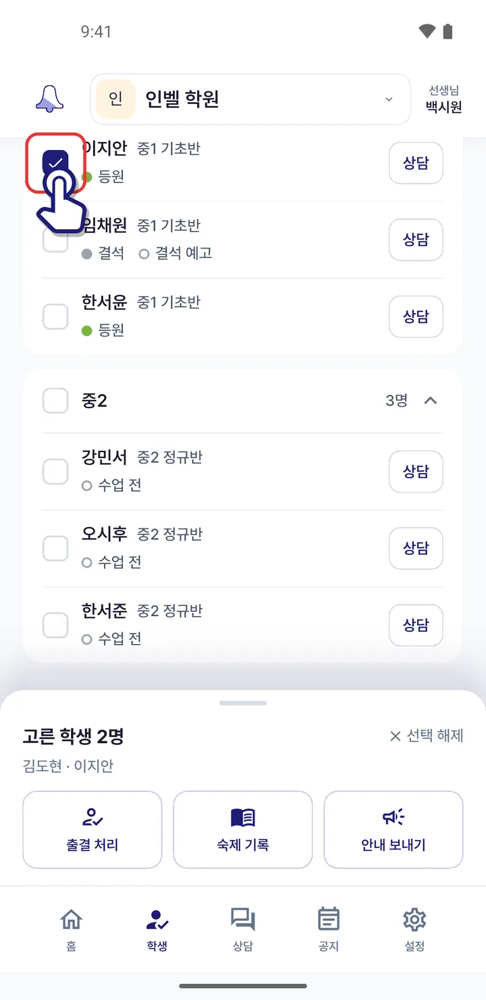
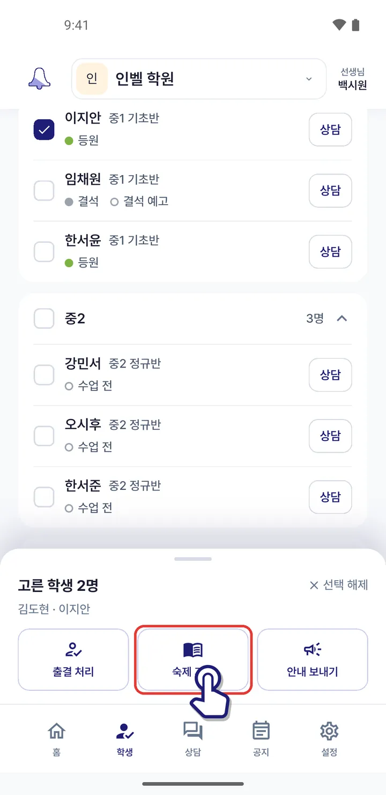
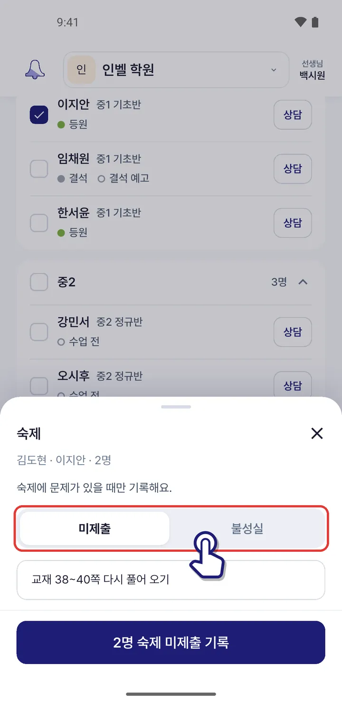
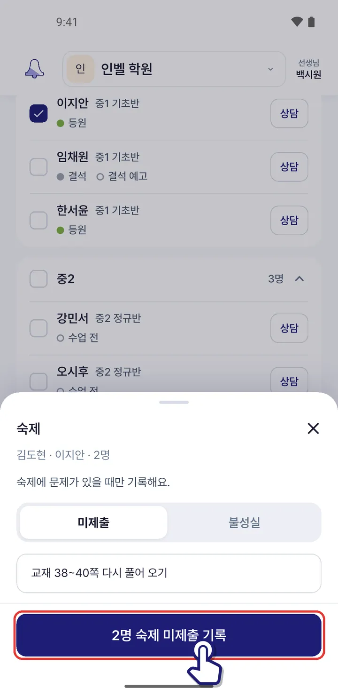

숙제를 안 해 온 학생이 있어요
숙제에 문제가 있는 학생만 체크해 「미제출」 · 「불성실」로 기록하면 학부모님께 알려 드려요.
아래 「학생」 탭에서 숙제를 안 해 온 학생들을 체크해요.

아래 판에서 「숙제 기록」을 눌러요.

「미제출」 · 「불성실」 중 하나를 골라요.

필요하면 메모를 적고 아래 「숙제 미제출 기록」 단추를 눌러요.

메모는 학부모님께도 보여요. 숙제를 잘 해 온 학생은 따로 기록하지 않아도 돼요.
비슷한 상황
앱 1.0.71 화면 기준